ፋሲካ (Fasika)
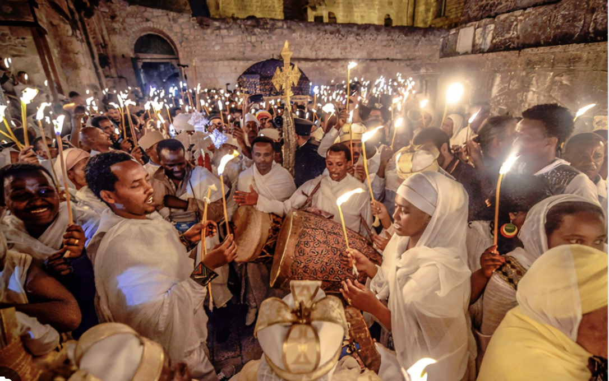Fasika is the Ethiopian Orthodox Tewahedo Church's celebration of Easter, a major religious holiday in Ethiopia. It marks the resurrection of Jesus Christ and is one of the most significant festivals in the Ethiopian Orthodox calendar. The celebration of Fasika is deeply rooted in ancient Christian traditions and carries significant cultural and spiritual importance. The lead-up to Fasika involves an extended period of fasting, known as Lent (Hudade or Abiy Tsom), which lasts for 55 days. During this period, devout Christians abstain from eating meat, dairy products, and other animal-derived foods. The fasting period is one of the most stringent and is taken very seriously by followers of the Ethiopian Orthodox Church.
During Fasika, Ethiopians wear traditional white outfits symbolizing purity and spiritual renewal. Men typically wear a shamma or gabi, handwoven white cotton cloths draped over the shoulders, while women don a habesha kemis, a long white dress with colorful embroidery, paired with a netela shawl. Both men and women often accessorize with traditional Ethiopian jewelry. The outfits reflect the solemnity and joy of the occasion, blending religious observance with cultural pride.
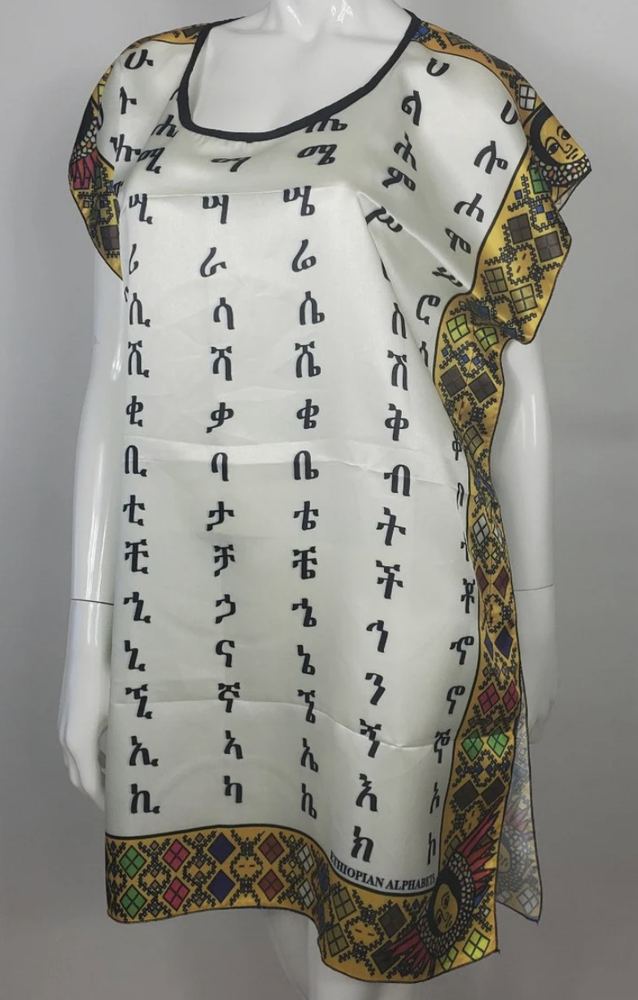 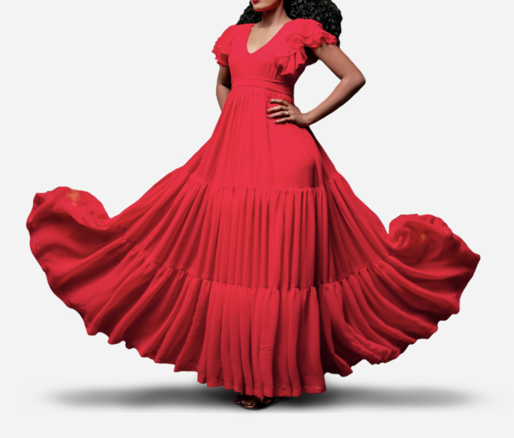 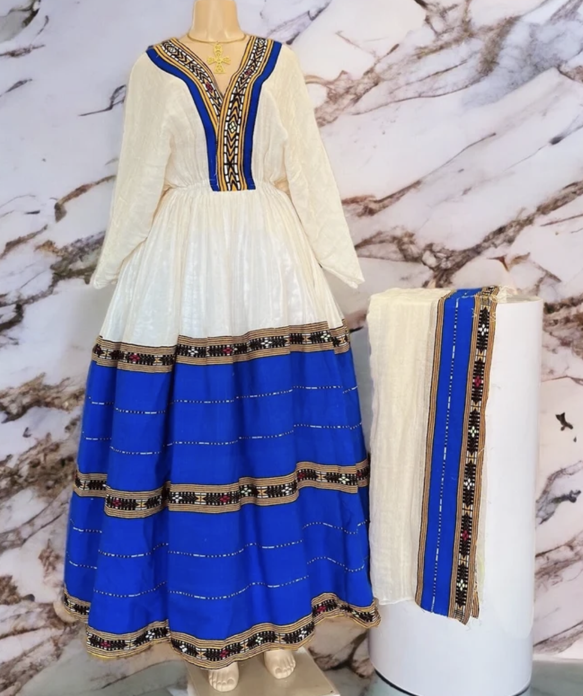
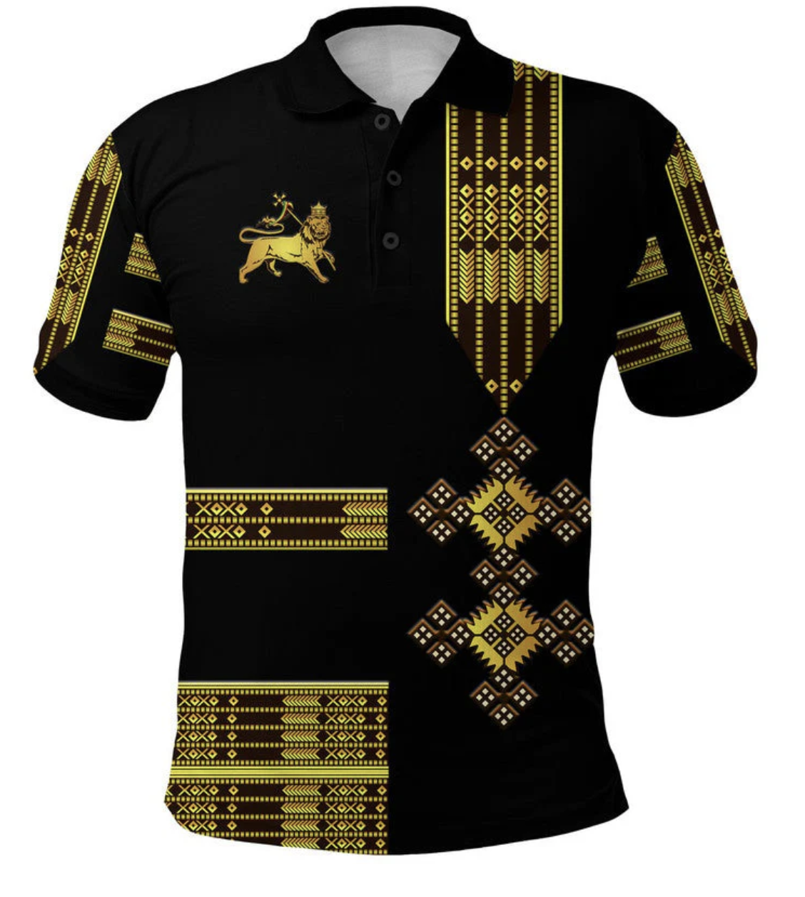 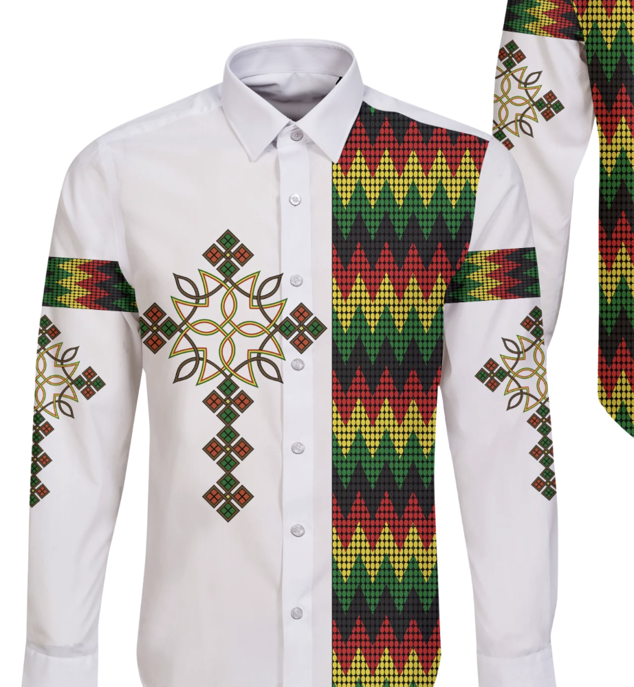
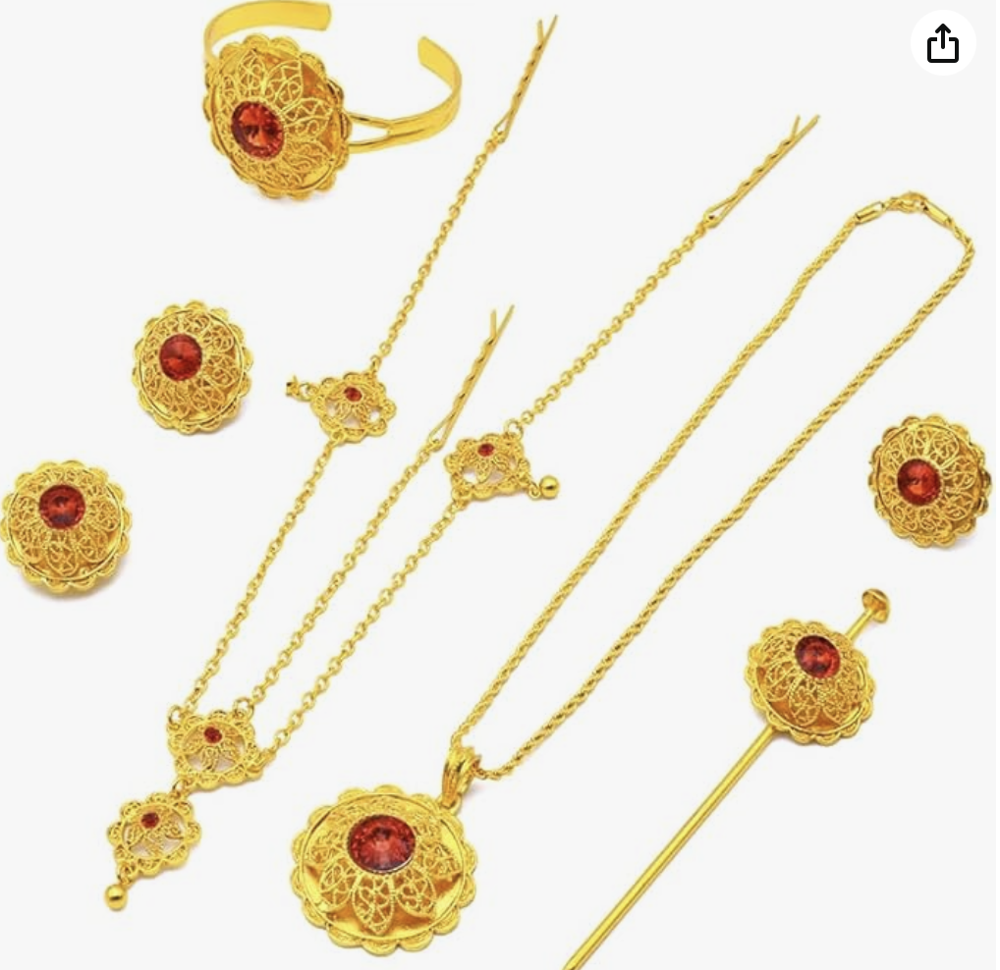 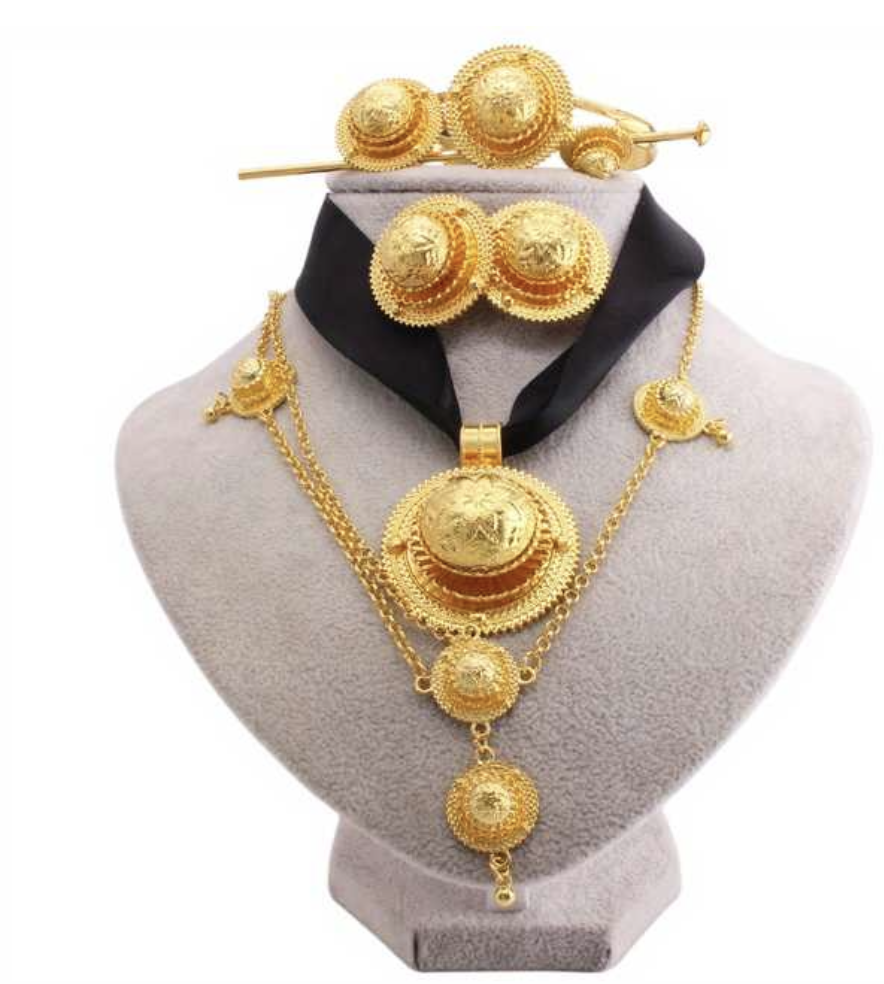 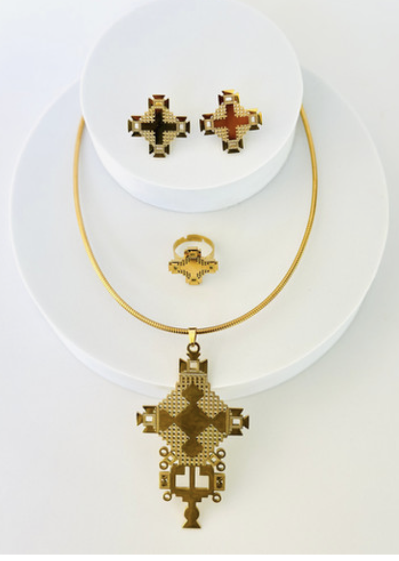
Foods
Genfo is a traditional Ethiopian dish, often enjoyed as a breakfast or a ceremonial
food, particularly during special occasions and religious fasting periods. Genfo is
a type of thick porridge, primarily made from barley or wheat flour, and its
preparation and serving methods reflect Ethiopia's deep culinary traditions.
Traditionally, the well in the center of the Genfo is filled with a generous amount
of niter kibbeh, which is spiced clarified butter, and sometimes berbere (a blend of
chili and spices) is added for heat. The butter melts into the porridge, creating a
rich, flavorful dish. Genfo is typically eaten by tearing off pieces and dipping them
into the butter and spice mixture.
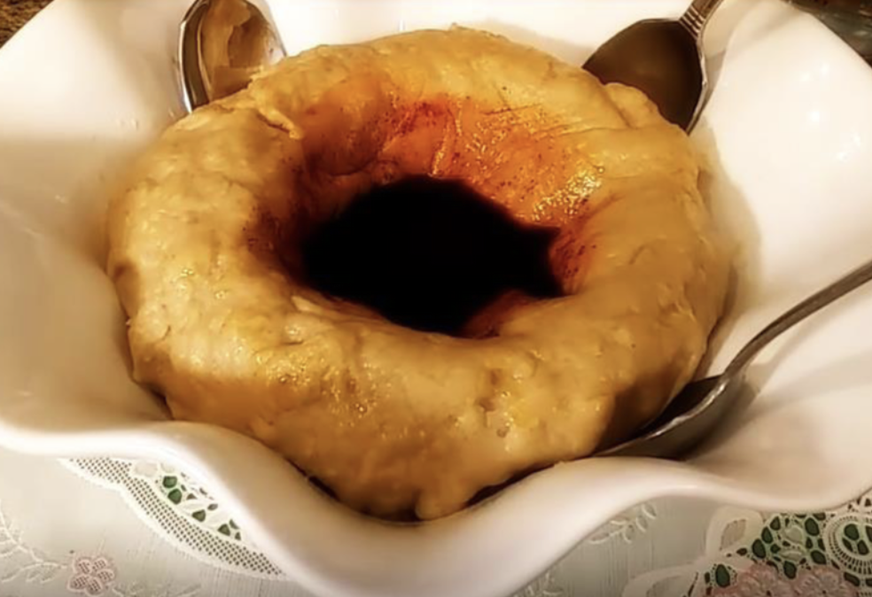 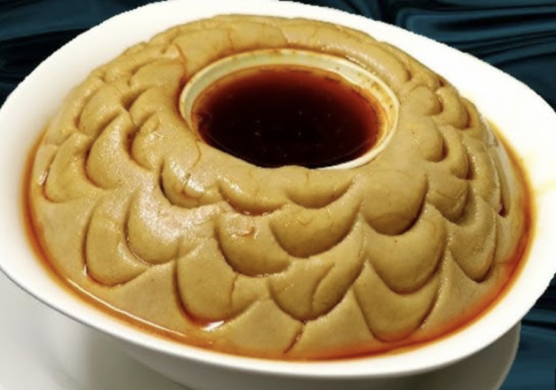
The other popular food is Tihlo is a traditional Ethiopian dish from made from barley
dough shaped into small balls and served with a spicy stew, usually containing berbere and
meat. It's a communal dish, often eaten during special occasions using a wooden stick
called a megeba to dip the dough balls into the stew. Tihlo is valued for its rich flavor
and its role in bringing people together during celebrations.
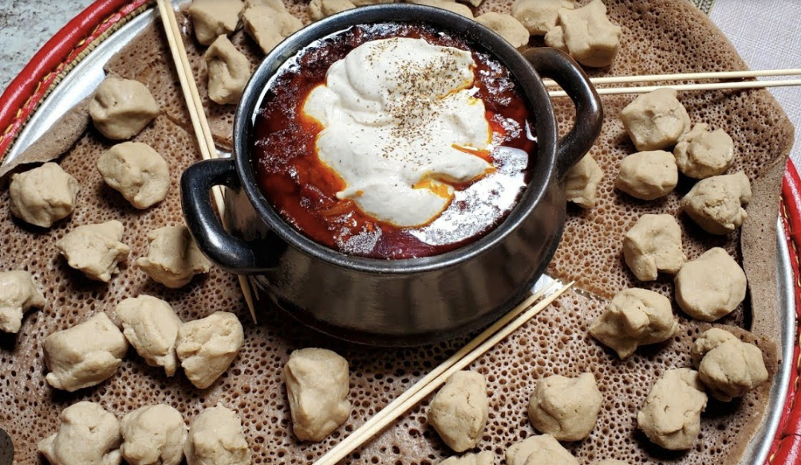 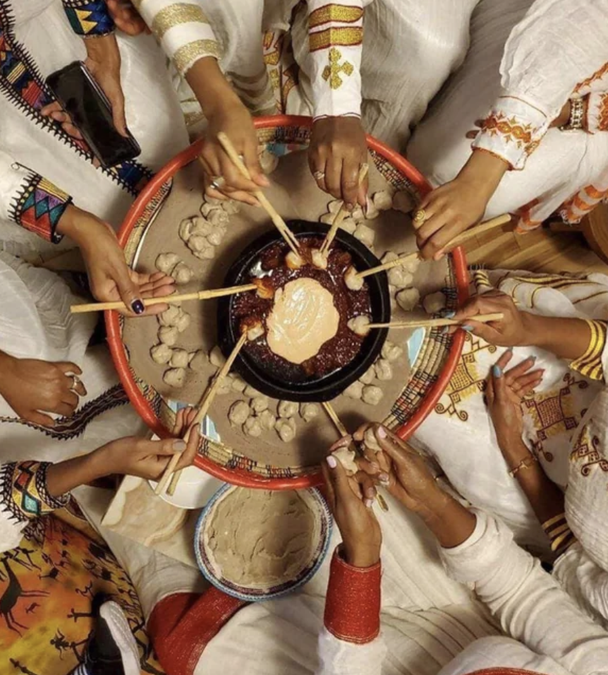